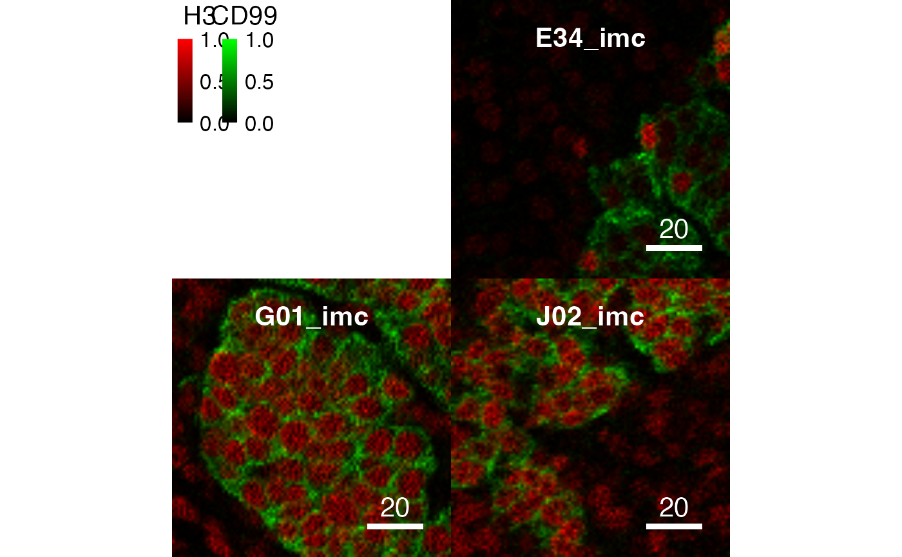

Methods to change pixel values in CytoImageList objects. In the
following sections, object is a CytoImageList object
containing one or multiple channels.
Value
A CytoImageList object containing the manipulated Images.
Image scaling
In some cases, images need to be scaled by a constant
(e.g. 2^16-1 = 65535) value to revert them back to the original
pixel values after reading them in.
scaleImages(object, value)Scales all images in the CytoImageList
objectbyvalue. Herevalueneeds to be a single numeric or a numeric vector of the same length asobject.
Image normalization
Linear scaling of the intensity values of each Image contained
in a CytoImageList object to a specific range. Images
can either be scaled to the minimum/maximum value per channel or across all
channels (default separateChannels = TRUE). Also, images can be scaled
to the minimum/maximum value per image or across all images (default
separateImages = FALSE). The latter allows the visual comparison of
intensity values across images.
To clip the images before normalization, the inputRange can be set.
The inputRange either takes NULL (default), a vector of length 2
specifying the clipping range for all channels or a list where each
named entry contains a channel-specific clipping range.
Image normalization also works for images stored on disk. By default,
the normalized images are stored as a second entry called "XYZ_norm"
in the .h5 file. Here "XYZ" specifies the name of the original entry.
By storing the normalized next to the original images on disk, space
usage increases. To avoid storing duplicated data, one can specify
overwrite = TRUE, therefore deleting the original images
and only storing the normalized images. However, the original images
cannot be accessed anymore after normalisation.
normalize(object, separateChannels = TRUE, separateImages = FALSE,
ft = c(0, 1), inputRange = NULL, overwrite = FALSE):
object:A CytoImageList object
separateChannels:Logical if pixel values should be normalized per channel (default) or across all channels.
separateImages:Logical if pixel values should be normalized per image or across all images (default).
ft:Numeric vector of 2 values, target minimum and maximum intensity values after normalization (see
normalize).inputRange:Numeric vector of 2 values, sets the absolute clipping range of the input intensity values (see
normalize). Alternatively a names list where each entry corresponds to a channel-specific clipping range.overwrite:Only relevant when images are kept on disk. By specifying
overwrite = TRUE, the normalized images will overwrite the original images in the .h5 file, therefore reducing space on disk. However, the original images cannot be accessed anymore after normalization. Ifoverwrite = FALSE(default), the normalized images are added as a new entry called "XYZ_norm" to the .h5 file. )
See also
normalize for details on Image normalization
Author
Nils Eling (nils.eling@dqbm.uzh.ch)
Examples
data(pancreasImages) # Scale images to create segmentation masks cur_files <- list.files(system.file("extdata", package = "cytomapper"), pattern = "mask.tiff", full.names = TRUE) x <- loadImages(cur_files) # Error when running plotCells(x) # Therefore scale to account for 16 bit encoding x <- scaleImages(x, 2^16 - 1) plotCells(x)# Setting the clipping range x <- normalize(x, inputRange = c(0, 0.9)) plotPixels(x, colour_by = c("H3", "CD99"))# Setting the clipping range per channel x <- normalize(pancreasImages, inputRange = list(H3 = c(0, 70), CD99 = c(0, 100))) plotPixels(x, colour_by = c("H3", "CD99"))# Normalizing per image x <- normalize(pancreasImages, separateImages = TRUE) plotPixels(x, colour_by = c("H3", "CD99"))